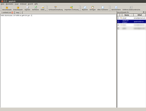

gpg4usb
Dieser Artikel wurde für die folgenden Ubuntu-Versionen getestet:
Ubuntu 14.04 Trusty Tahr
Zum Verständnis dieses Artikels sind folgende Seiten hilfreich:
 Gpg4usb
Gpg4usb  ist ein portables Programm mit u.a. deutscher Benutzeroberfläche und integriertem GnuPG. Es dient dem Erstellen sowie Verwalten von GnuPG Schlüsselpaaren sowie zum Ver- und Entschlüsseln von Text oder Dateien. Verschlüsselter Text kann mit Kopieren und Einfügen z.B. via E-Mail weitergereicht werden. Es handelt sich um ein plattformübergreifendes Programm und kann somit per USB Stick an Windows- und Linux-Rechnern verwendet werden. Es bietet eine übersichtliche Benutzeroberfläche und eine ausführliche programminterne Hilfefunktion.
ist ein portables Programm mit u.a. deutscher Benutzeroberfläche und integriertem GnuPG. Es dient dem Erstellen sowie Verwalten von GnuPG Schlüsselpaaren sowie zum Ver- und Entschlüsseln von Text oder Dateien. Verschlüsselter Text kann mit Kopieren und Einfügen z.B. via E-Mail weitergereicht werden. Es handelt sich um ein plattformübergreifendes Programm und kann somit per USB Stick an Windows- und Linux-Rechnern verwendet werden. Es bietet eine übersichtliche Benutzeroberfläche und eine ausführliche programminterne Hilfefunktion.
Zum Funktionsweise der Verschlüsselung siehe GnuPG/Technischer Hintergrund und GnuPG/Web of Trust.
Installation¶
Gpg4usb kann von der Projektseite als Archiv-Datei gpg4usb-0.3.3-2.zip  oder neuer heruntergeladen werden. Nach dem Entpacken [2] befinden sich die Programmstarter [3] für Linux oder Windows in dem Verzeichnis, in welches entpackt wurde.
oder neuer heruntergeladen werden. Nach dem Entpacken [2] befinden sich die Programmstarter [3] für Linux oder Windows in dem Verzeichnis, in welches entpackt wurde.
Hinweis!
Fremdsoftware kann das System gefährden.
Anmerkung: Nach dem Herunterladen sollte man unbedingt die Prüfsumme der Archivdatei ermitteln (siehe Hashfunktionen) und mit der Downloadseite abgleichen, um eine Manipulation durch Dritte auszuschließen.
Benutzung¶
 Man kann bestehende Schlüsselpaare importieren, indem man die entsprechenden Schlüssel mit der Dateiendung .gpg im Ordner ~/.gnupg/ des Homeverzeichnis auswählt. In pubring.gpg sind hierbei die öffentlichen, in secring.gpg die privaten Schlüssel gespeichert. Auch das Erstellen neuer Schlüssel ist möglich. Diese werden im Programmordner im Ordner keydb gespeichert. Um den bzw. die öffentlichen Schlüssel zur Weitergabe an den Kommunikationspartner, in einer Datei oder in die Zwischenablage zu exportieren, ruft man die Schlüsselverwaltung auf.
Um Text, welcher in das Textfenster eingetragen wurde, zu verschlüsseln, wählt man rechts den öffentlichen Schlüssel des Empfängers an und benutzt den Button "Verschlüsseln". Dieser verschlüsselte Text muss nun komplett kopiert werden und in das E-Mailprogramm eingefügt werden. Am einfachsten benutzt man dazu die Schaltflächen "Alles markieren" und "Kopieren".
Will man Dateien verschlüsseln, muss man auf den entsprechenden Schaltfläche klicken. Man wählt im darauf folgenden Fenster die zu verschlüsselnde Datei an und den öffentlichen Schlüssel des Empfängers. Der Ausgabepfad ist der Gleiche wie der Eingabepfad, es sei denn man wählt einen Anderen aus.
Problembehebung¶
Falls man das Programm auf einem USB-Stick verwendet, kann dieser verloren gehen. Daher kann man das Programmverzeichnis z.B. mit Hilfe eines Truecrypt-Containers verschlüsseln, um die privaten Schlüssel vor fremdem Zugriff zu schützen, sofern es die Brisanz der verschlüsselten Daten erfordert. Des Weiteren ist darauf zu achten, ein Backup der Schlüsselpaare anzufertigen, da sie sonst auch verloren wären und somit die verschlüsselten Daten unwiederbringlich verloren wären.
Sollte man die Nachricht verschlüsselt haben und feststellen, dass man noch etwas hinzufügen oder ändern will, kann man die Rückgängig-Funktion Strg + Z nutzen. Strg + Y ist das Gegenstück zu Strg + Z und stellt die rückgängig gemachten Schritte wieder her.
Links¶
Gpg4win
 - deutsche Beschreibung des asymmetrischen Verschlüsselungsverfahrens mit GnuPG
- deutsche Beschreibung des asymmetrischen Verschlüsselungsverfahrens mit GnuPGgpg4usb – Verschlüsselung für Unterwegs
- Blogbeitrag, 11/2011Asymmetrisches Kryptosystem - Wikipedia
- Erstellt mit Inyoka
-
 2004 – 2017 ubuntuusers.de • Einige Rechte vorbehalten
2004 – 2017 ubuntuusers.de • Einige Rechte vorbehalten
Lizenz • Kontakt • Datenschutz • Impressum • Serverstatus -
Serverhousing gespendet von